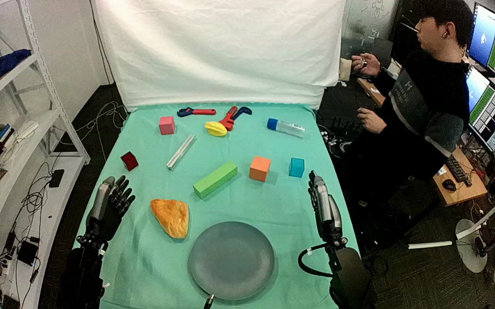

ActionNet · 01JN0YDDF5ZYHXSSFO
01jn0yddf5zyhxssfo

Annotation
From the dedicated visual review of this video (humanoid_action_v1). Plain text · JSON
Observed outcome
- Status
successful_visible_placement
- Description
Pastry is released onto the gray plate and remains resting there while the hand from the lower-left edge withdraws.
- Selected action outcome
successful_visible_placement
- Source overall success label
not used to infer outcome
Hand roles
- Lower left visible arm
Sole manipulating hand: closes thumb and fingers around opposing sides of the pastry, bears it during lift/transport, lowers it onto the plate, opens and withdraws.
- Lower right visible arm
Remains beside the table on image right; no observed contact with pastry, plate, or other task object.
Coordination
Single-hand object placement. No hand-to-hand transfer, bimanual stabilization, or physical assistance from the nearby person is observed.
Robot-side evidence
- Active arm
hand entering from the lower-left edge of the initial image
- Initial frame evidence
Paired forearms enter from the near lower image edges; the active hand is attached to the lower-left forearm. Torso and shoulders are outside the image. Opposing thumb and grouped fingers establish hand geometry but do not independently establish whether the camera is mirrored or its pose relative to the robot body.
- Confidence
Visible-arm identity is unambiguous; anatomical left/right is not independently established.
Chronology
| Frames | Observation |
|---|---|
| 0–49 | Pastry lies on the cloth left of the empty gray plate; both hands are clear. The lower-lower-left hand begins to turn/reach toward it near the end of this interval. |
| 50–100 | The lower-lower-left hand approaches open around the pastry. At native frame 86 the opposing thumb reaches the near/left-facing surface while grouped fingers remain above it; frame 100 still shows an open gap and the pastry on the table. The lower-lower-right hand remains clear. |
| 102–164 | The lower-lower-left hand thumb and fingers move to opposing sides and close around the pastry; native frame 124 shows it enclosed between the hand surfaces. It shifts slightly before the lift. No second-hand contact or regrasp is visible. |
| 166–274 | The lower-lower-left hand raises the pastry from the table, maintaining its opposing-side grasp and bearing its weight. Frame 216 shows the lifted pastry and frame 274 shows a clear suspended object above/left of the plate. |
| 276–354 | The lower-left arm carries the held pastry to the gray plate and begins lowering it. Frame 310 shows it suspended centrally above the plate; frame 354 shows it much closer to the plate with hand contact maintained. |
| 356–436 | The lower-lower-left hand continues lowering and settles the pastry on the plate. Native frame 402 shows a tilted pastry with thumb-side contact; frames 428 and 436 show the hand opening as the pastry becomes fully supported by the plate. The exact first plate-contact frame is partially occluded by the hand and pastry. |
| 438–557 | The lower-lower-left hand separates and retracts to the left side. The pastry remains on the gray plate through native final frame 557, both hands clear of it. No additional manipulation follows. |
Differences from the publisher annotation
- The source calls the target a container; the observed target is a shallow round gray plate. The usable prompt specifies the plate.
- Croissant identity comes from source annotation; visually it is a triangular golden textured pastry-shaped object. Prompt uses croissant-shaped pastry rather than asserting food material.
Uncertainties
- Actual food versus prop material cannot be established visually.
- The exact first table-separation and first plate-contact frames cannot be isolated from the sampled overview and hand occlusion; stated chronology intervals bracket visible transitions.
- Top camera has slight source-view motion across the sequence; required fixed-camera generation constraint is retained verbatim.
- Torso and shoulder attachment are outside the image, and camera pose or mirroring is not independently established. Anatomical left/right is uncertain; prompt uses the unambiguous hand entering from the lower-left edge.
Complete review record action_review.json
{
"dataset": "ActionNet",
"episode_id": "01JN0YDDF5ZYHXSSFO",
"prompt_protocol": "humanoid_action_v1",
"prompt_provenance": "visually_authored_from_video_and_initial_frame",
"review_scope": "One dedicated agent reviewed the complete unchanged 558-frame top/rgb.mp4 and the generation first frame. Full single-task sequence retained.",
"source_video": "../../original/top/rgb.mp4",
"conditioning_first_frame": "../first_frame.png",
"generation_video": "../../original/top/rgb.mp4",
"action_prompt": "../actiongeneration_prompt.txt",
"source_frame_start": 0,
"source_frame_end_exclusive": 558,
"fps_rational": "30/1",
"resolution": [
1280,
800
],
"source_annotation": {
"verbatim_task_prompt": "Place the croissant into the container",
"task_prompt_path": "../../original/task_prompt.txt"
},
"anatomical_side_evidence": {
"active_arm": "hand entering from the lower-left edge of the initial image",
"initial_frame_evidence": "Paired forearms enter from the near lower image edges; the active hand is attached to the lower-left forearm. Torso and shoulders are outside the image. Opposing thumb and grouped fingers establish hand geometry but do not independently establish whether the camera is mirrored or its pose relative to the robot body.",
"confidence": "Visible-arm identity is unambiguous; anatomical left/right is not independently established."
},
"arm_roles": {
"lower_left_visible_arm": "Sole manipulating hand: closes thumb and fingers around opposing sides of the pastry, bears it during lift/transport, lowers it onto the plate, opens and withdraws.",
"lower_right_visible_arm": "Remains beside the table on image right; no observed contact with pastry, plate, or other task object."
},
"coordination": "Single-hand object placement. No hand-to-hand transfer, bimanual stabilization, or physical assistance from the nearby person is observed.",
"chronology": [
{
"frames": [
0,
49
],
"observation": "Pastry lies on the cloth left of the empty gray plate; both hands are clear. The lower-lower-left hand begins to turn/reach toward it near the end of this interval."
},
{
"frames": [
50,
100
],
"observation": "The lower-lower-left hand approaches open around the pastry. At native frame 86 the opposing thumb reaches the near/left-facing surface while grouped fingers remain above it; frame 100 still shows an open gap and the pastry on the table. The lower-lower-right hand remains clear."
},
{
"frames": [
102,
164
],
"observation": "The lower-lower-left hand thumb and fingers move to opposing sides and close around the pastry; native frame 124 shows it enclosed between the hand surfaces. It shifts slightly before the lift. No second-hand contact or regrasp is visible."
},
{
"frames": [
166,
274
],
"observation": "The lower-lower-left hand raises the pastry from the table, maintaining its opposing-side grasp and bearing its weight. Frame 216 shows the lifted pastry and frame 274 shows a clear suspended object above/left of the plate."
},
{
"frames": [
276,
354
],
"observation": "The lower-left arm carries the held pastry to the gray plate and begins lowering it. Frame 310 shows it suspended centrally above the plate; frame 354 shows it much closer to the plate with hand contact maintained."
},
{
"frames": [
356,
436
],
"observation": "The lower-lower-left hand continues lowering and settles the pastry on the plate. Native frame 402 shows a tilted pastry with thumb-side contact; frames 428 and 436 show the hand opening as the pastry becomes fully supported by the plate. The exact first plate-contact frame is partially occluded by the hand and pastry."
},
{
"frames": [
438,
557
],
"observation": "The lower-lower-left hand separates and retracts to the left side. The pastry remains on the gray plate through native final frame 557, both hands clear of it. No additional manipulation follows."
}
],
"observed_outcome": {
"status": "successful_visible_placement",
"description": "Pastry is released onto the gray plate and remains resting there while the hand from the lower-left edge withdraws.",
"selected_action_outcome": "successful_visible_placement",
"source_overall_success_label": "not used to infer outcome"
},
"source_annotation_discrepancies": [
"The source calls the target a container; the observed target is a shallow round gray plate. The usable prompt specifies the plate.",
"Croissant identity comes from source annotation; visually it is a triangular golden textured pastry-shaped object. Prompt uses croissant-shaped pastry rather than asserting food material."
],
"uncertainties": [
"Actual food versus prop material cannot be established visually.",
"The exact first table-separation and first plate-contact frames cannot be isolated from the sampled overview and hand occlusion; stated chronology intervals bracket visible transitions.",
"Top camera has slight source-view motion across the sequence; required fixed-camera generation constraint is retained verbatim.",
"Torso and shoulder attachment are outside the image, and camera pose or mirroring is not independently established. Anatomical left/right is uncertain; prompt uses the unambiguous hand entering from the lower-left edge."
],
"inspection_coverage": {
"total_decoded_frames": 558,
"overview_frame_indices": {
"start": 0,
"stop_inclusive": 556,
"step": 2,
"count": 279
},
"overview_method": "Decoded RGB every second frame into eight temporary 6-by-6 contact sheets outside dataset folders; reviewed all sheets.",
"native_resolution_frames": [
0,
86,
100,
124,
216,
274,
310,
354,
402,
428,
436,
444,
557
],
"native_resolution": [
1280,
800
],
"initial_png_inspected_after_full_sequence": true,
"temporary_evidence_location": "/tmp/actionnet_review_two (not under generation input)",
"retained_evidence_frame_directories": false
},
"preservation": {
"whole_original_single_task_clip_retained": true,
"crop": false,
"shorten": false,
"resize": false,
"reencode": false,
"source_and_generation_sha256_equal": true
},
"prompt_word_count": 68
}